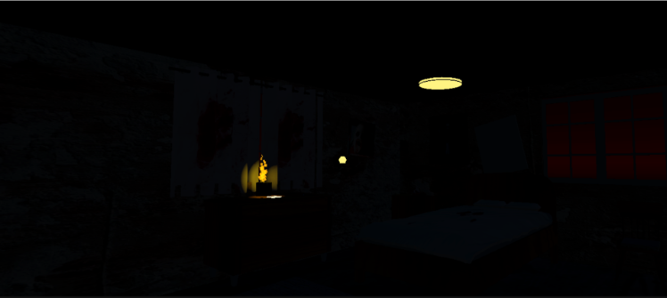

“Lucid Terror” is an escape room horror VR game in which the player is in a nightmare. To escape the player has to solve different puzzles to get the keys that open the doors to advance in the game and escape. This was a team project, the project was about building a VR game using the game software Unity. My role in this project was the programmer of the team and 3D modeler of some assets.


During this project there were two main challenges. First was how to make a horror ambient without relying on random jumspcares and secondly how to guide the players throught the puzzles without giving away the answers. For the horror enviroment I used sounds and jumpscares only after important events in the game as well as a ghost that constantly follows the player. For the puzzles I gave visual cues like having elements that go together the same colour or shape. During this process I learnt how to build a video game from scratch using Unity, integrate 3D models using blender and lead a team to fisnish the project in an organized way.

I did several changes to improve the game. During the first versions I got feedback about the game not being dark enough so it doesnt feel scary, some elements were hard to reach and some objects were too hard to find. So I adjusted the light of the rooms, position of necessary objects to advance in the game and the size of elemts so they are easier to interact with. The most important iteration is the ghost mechanics. The ghost is an NPC that constantly follows the player. At first the player has to point the flashlight at the ghost to prevent them from moving, but when testing I got feedback that it was too hard to focus on the puzzles while pointing the flashlight at the ghost. The final mechanic was that the ghost disappears and start from it's starting point to follow the player again.